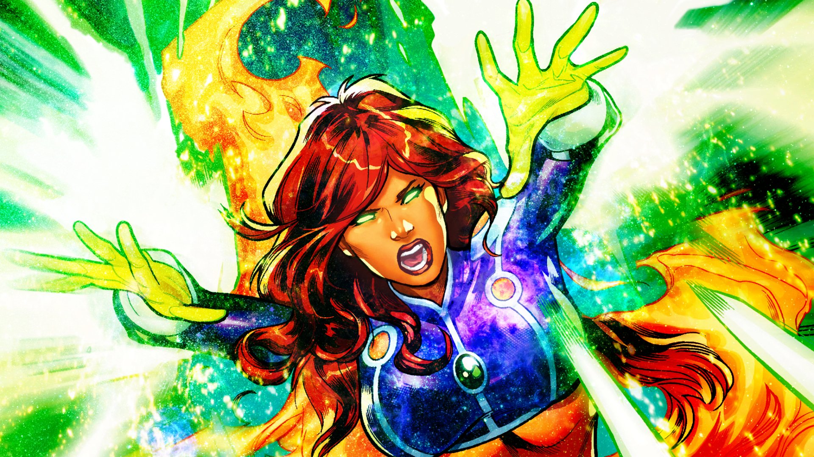

Deathstroke is one of Nightwing’s most dangerous and serious enemies. Their conflict started
when Dick was leading the Teen Titans, and Deathstroke began hunting the team for his own
personal missions. This forced Dick to grow up quickly and learn how to lead under pressure.
Even as Nightwing, Dick continues to face Deathstroke in battles that test his skills and
judgment. Deathstroke respects Nightwing’s talent and knows he is one of the few heroes who
can keep up with him. Still, he sees Nightwing as someone who gets in the way of his plans,
which keeps their rivalry going year after year.
Wally West (The Flash)
Wally West is one of Nightwing’s closest friends and strongest allies. They met when they were
both young members of the Teen Titans, and their friendship grew from working together and
supporting each other through tough missions.
Wally’s upbeat personality and sense of humor balance out Nightwing’s more serious nature.
They trust each other deeply, and their friendship feels more like family. No matter how much
time passes, Wally is someone Nightwing can always count on, both in battle and in everyday life.

Starfire
Starfire and Nightwing shared a strong and meaningful romantic relationship during their time
with the Teen Titans. Their bond grew from working together, learning from each other, and
being honest about their feelings.
Starfire is a powerful ally who brings strength, kindness, and loyalty to every mission. Even
when she and Nightwing are not together romantically, they remain close friends who care about
each other. Their connection continues to be an important part of both of their lives.
Relationship Quiz
Test your Nightwing knowledge! Choose whether each character is an ally, enemy, or love interest.